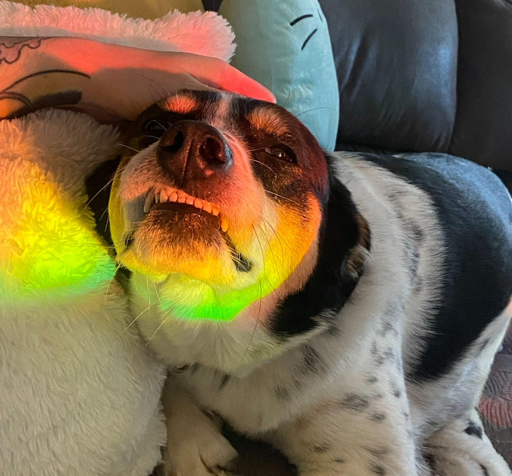
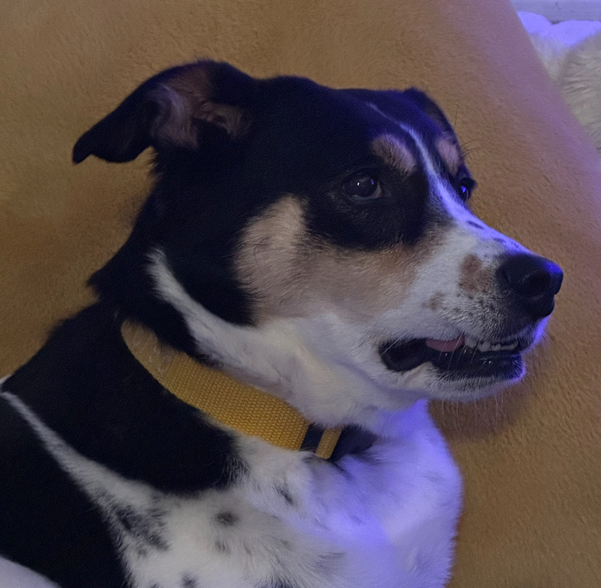

codsworth
 Codsworth is a 6 year old mixed breed. He is a sweet boy who just wants to be pet. His favorite activity is sittig by the treat jar and waiting for someone to give him a milk bone.
Codsworth is a 6 year old mixed breed. He is a sweet boy who just wants to be pet. His favorite activity is sittig by the treat jar and waiting for someone to give him a milk bone.
Woody is a 4 month old mixed breed puppy. Unlike most puppies; he's very calm(for a puppy) and doesn't have alot of puppy energy. His favorite activites include playing with toys and chasing after his cat friends.
Kimmy is the oldest animal of the bunch. She is not very welcoming to anybody who isn't me. While she has gotten *slightly* nicer in her older age though. Her favorite activity is yelling at people who aren't me to stay away from her.
Koga is 3 years old the he is the sweetest boy. While is doesn't tend to be too fond of dogs; he loves every person and cat he meets! His favorite activity is eating. Alot.
Kyo is 9 month old and is the baby cat of the group. Named after Kyojuro Rengoku from the popular anime/manga "Demon Slayer"; Kyo is a fearless cat who doesn't let anything scare him. The only cat in the house bold enough to get in there and play with the dogs. His favorite activity is walking around the house between the hours of 1am and 6am YELLING for attention.
If you're thinking of adopting your own pet; we recommend checking out one of the following local rescues: